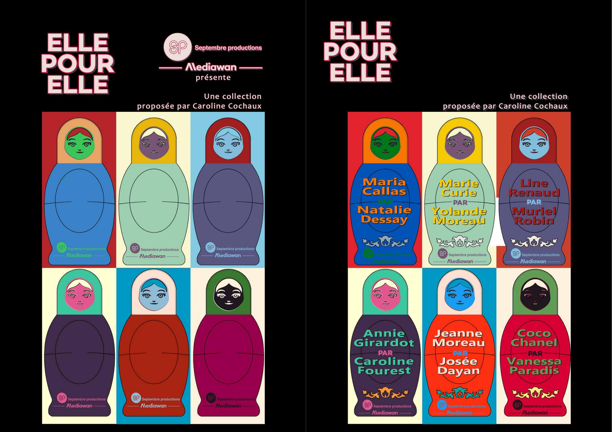
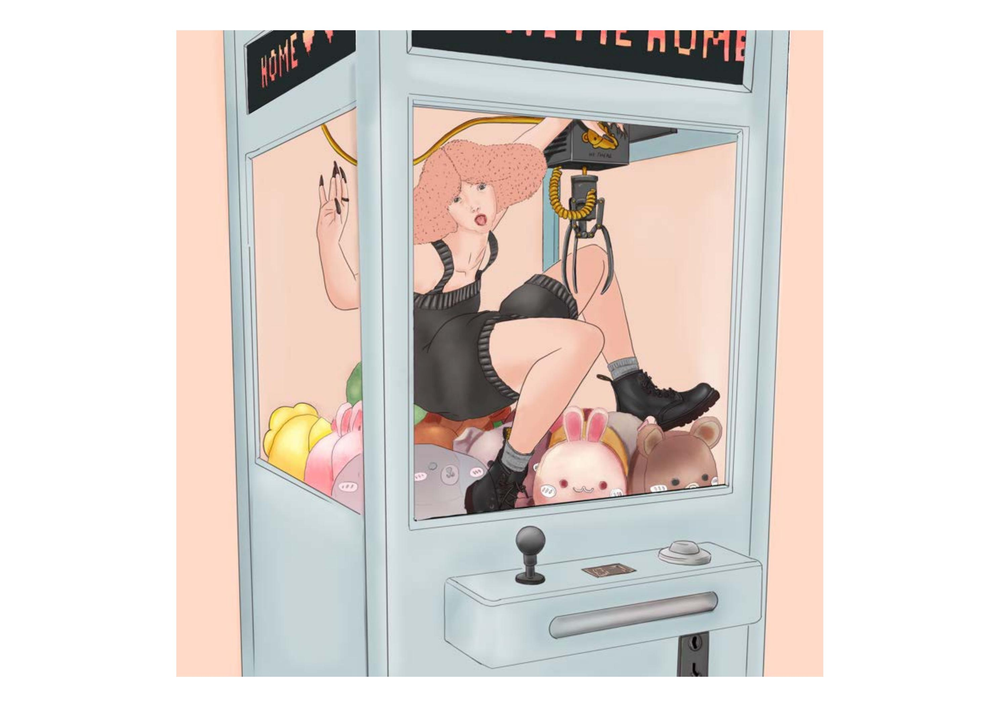
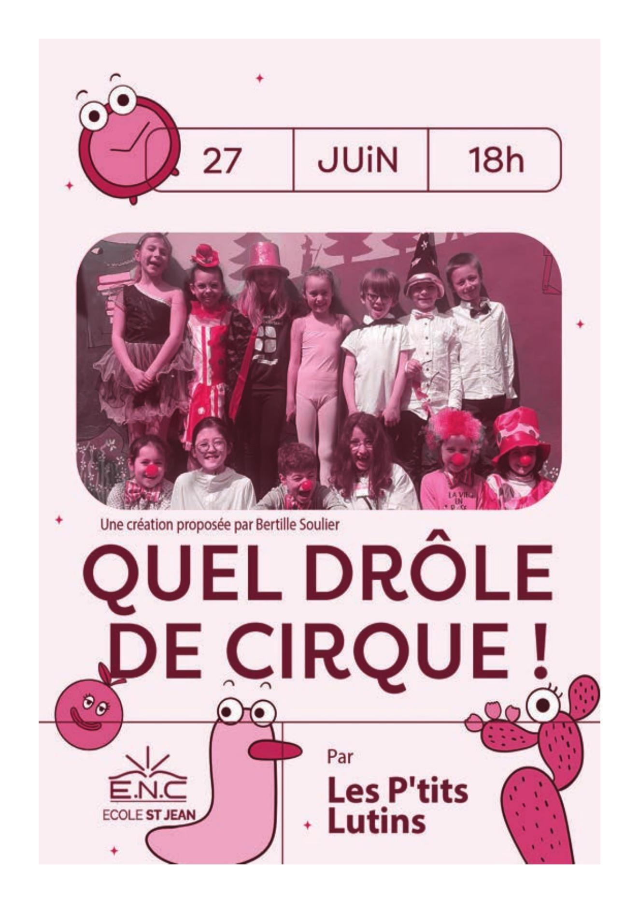
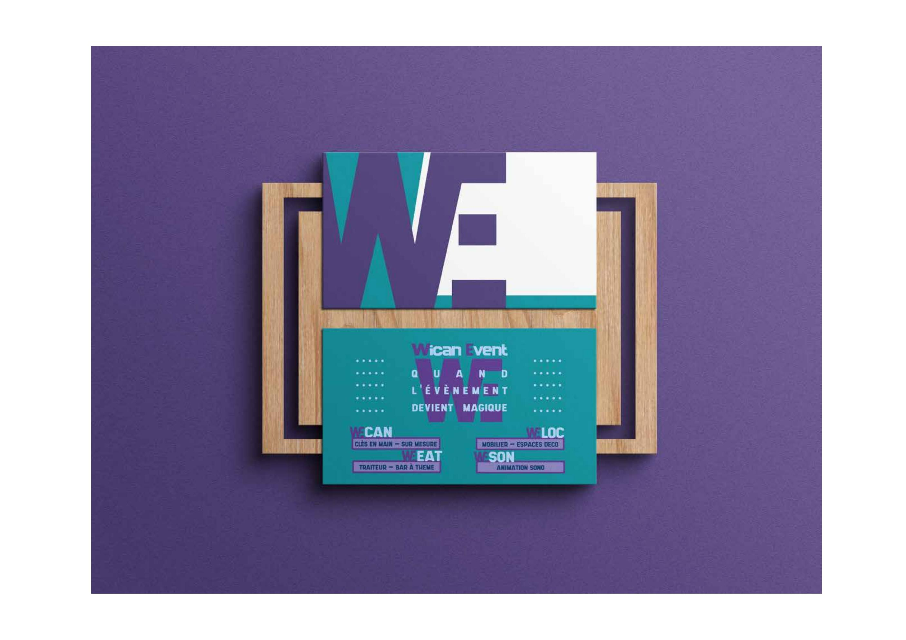
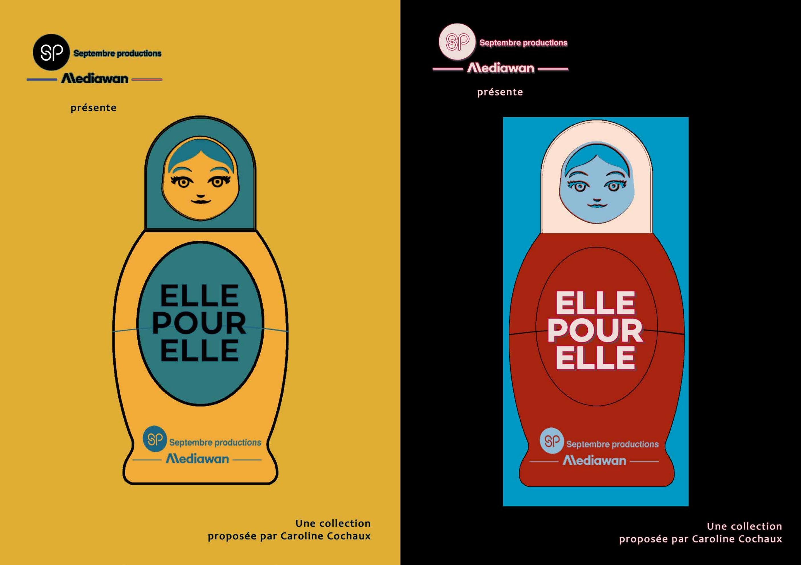
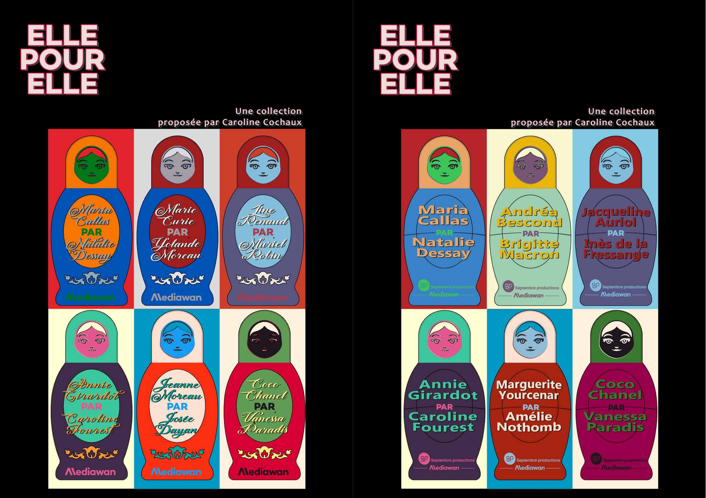
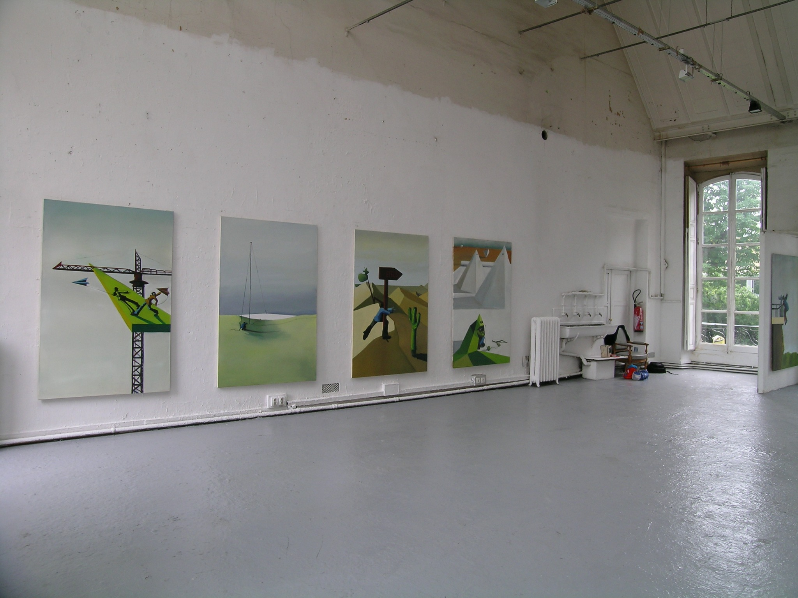

Audiovisuel · identité visuelle
Elle pour elle
Conception d’un univers graphique et déclinaison d’une collection de portraits sous la forme de poupées gigognes.
Stéphanie Atillah · Paris
Conception visuelle, mise en page, déclinaisons graphiques et illustration pour la communication, l’édition et l’audiovisuel.
Découvrir les projets ↓01
Conception · exécution · déclinaison

Audiovisuel · identité visuelle
Conception d’un univers graphique et déclinaison d’une collection de portraits sous la forme de poupées gigognes.

Illustration
Illustration narrative, composition et création de personnages.

Graphisme · PAO
Identité de saison et déclinaison d’affiches pour plusieurs spectacles.

Identité visuelle · communication
Conception d’un système graphique contemporain et déclinaison sur supports de communication.
02
Affiche · édition · communication
Création d’identités graphiques annuelles et déclinaison de séries d’affiches : hiérarchie de l’information, traitement des images, composition et préparation des supports.
Identité visuelle
Un projet plus contemporain qui complète le travail de déclinaison éditoriale et d’affiche.
03
Personnages · narration · édition
Univers illustré
Dessin, couleur, narration et composition : des images autonomes ou pensées pour accompagner un projet éditorial et audiovisuel.
04
Concept · identité · déclinaison
Elle pour elle
Création du principe visuel, des personnages et des variantes chromatiques pour un projet audiovisuel consacré aux réalisatrices.


Recherche personnelle
Peintures, petits formats et encres : un laboratoire foisonnant d’idées, d’objets déplacés et de récits suspendus qui nourrit le travail graphique.

À propos
Graphiste, maquettiste PAO et illustratrice diplômée des Beaux-Arts de Paris.
J’interviens de la conception à l’exécution : identité visuelle, mise en page, supports print et digitaux, déclinaisons, retouche et illustration.
Photoshop · InDesign · Krita · Direction artistique · Illustration · PAO
Coordonnées sur demande